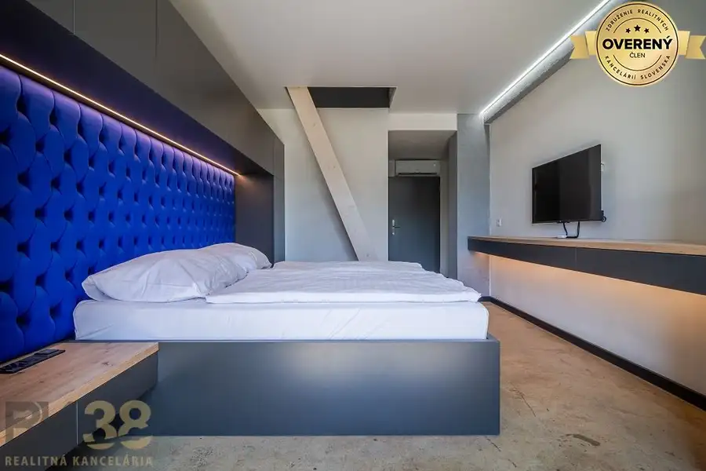
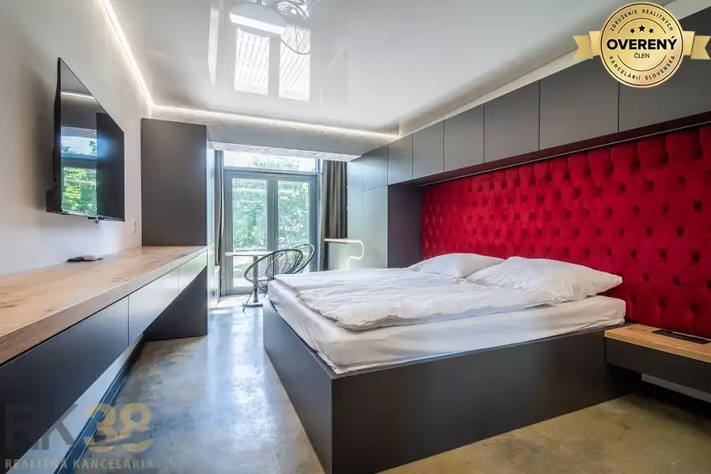
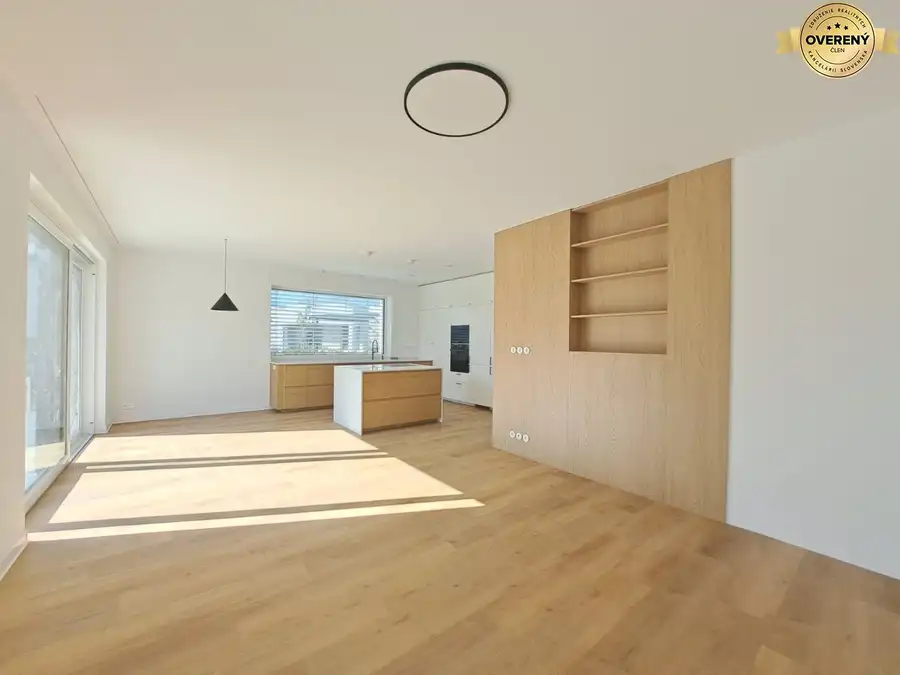

Predaj apartmánov pri Zemplínskej Šírave, SPILL Apartments Šírava
mestská časť Staré Mesto, Košice
- Plocha1 m²
- Poschodie1. z 2
- Stavpôvodný
O nehnuteľnosti
„Kúpte si kompletne dokončený apartmán na Šírave bez čakania na výstavbu a využite naplno prebiehajúcu letnú sezónu pre vlastný relax aj prenájom.“
Predstavujeme Vám
moderný apartmánový projekt s dovolenkovou atmosférou
a nadčasovým architektonickým riešením v jednej z najobľúbenejších rekreačných lokalít na Slovensku. Projekt ponúka jedinečnú príležitosť na
vlastné rekreačné bývanie, druhý domov pri vode alebo výhodnú investíciu s potenciálom pravidelného výnosu.
Možnosti využitia
-
Rekreačné a víkendové bývanie
-
Druhé bývanie pri vode
-
Krátkodobý prenájom – Airbnb / Booking
-
Investičná nehnuteľnosť s výnosovým potenciálom
Exkluzívna lokalita pri vode
Lokalita Zemplínskej Šíravy patrí dlhodobo medzi
najnavštevovanejšie turistické destinácie na Slovensku.
Apartmány sa nachádzajú v rekreačnom stredisku Kamenec, v bezprostrednej blízkosti pláží a ponúkajú
výbornú dostupnosť z Košíc aj Prešova
. V okolí nájdete Thermalpark Šírava, wellness centrá, vodné športy, cyklotrasy, turistické atrakcie, reštaurácie a kaviarne, vďaka čomu je lokalita atraktívna počas celého roka.
-
Jedna z najnavštevovanejších rekreačných oblastí na Slovensku
-
Priama blízkosť pláží Zemplínskej Šíravy
-
Thermalpark Šírava, wellness, vodné športy
-
Cyklotrasy, turistické atrakcie, reštaurácie a kaviarne
-
Celoročné využitie a turistický ruch
Prečo investovať do projektu SPILL Apartments?
Investícia do apartmánu v tejto lokalite predstavuje
atraktívnu príležitosť na dlhodobé zhodnotenie financií.
Oblasť Zemplínskej Šíravy zaznamenáva
stabilný rast dopytu po kvalitnom ubytovaní,
čo vytvára priaznivé podmienky pre
pravidelný príjem z prenájmu.
Vďaka svojej obľúbenosti medzi turistami a celoročnému rekreačnému využitiu patrí táto lokalita medzi
perspektívne investičné destinácie.
Rekreačné nehnuteľnosti pri vode sú navyše dlhodobo vyhľadávaným segmentom trhu, ktorý si udržiava svoju hodnotu a ponúka potenciál ďalšieho rastu.
Spojte príjemné s užitočným – využívajte apartmán pre vlastné potreby a zároveň profitujte z jeho prenájmu.
Cena od: 97 737,-€
Kontaktujte nás pre aktuálne ceny, pôdorysy a možnosti financovania. Radi vám zašleme kompletnú ponuku voľných apartmánov a aktuálny cenník.
Parametre
| Úžitková plocha | 1 m² |
|---|---|
| Poschodie | 1/vyššie poschodie |
| Počet poschodí | 2 |
| Stav | pôvodný |
| Postavené z | Zmiešané |
| Energetický certifikát | áno |
| Novostavba | áno |
| Dátum zverejnenia | 12. 6. 2026 |
Kde to je
mestská časť Staré Mesto, Košice
Inzerát neuvádza presnú polohu, mapa ukazuje obec.
Otvoriť v mapáchMohlo by Vás zaujímať

Apartmány10 111 119 €2-izbové apartmány v exkluzívnej lokalite Zemplínskej Šíravy Staré Mesto, Košice 1 m²1. podlažie „Kúpte si kompletne dokončený apartmán na Šírave bez čakania na výstavbu a využite naplno prebiehajúcu letnú sezónu pre vlastný relax aj prenájom.“…
Apartmány10 97 737 €1-izbové apartmány v exkluzívnej lokalite Zemplínskej Šíravy Staré Mesto, Košice 1 m²1. podlažie „Kúpte si kompletne dokončený apartmán na Šírave bez čakania na výstavbu a využite naplno prebiehajúcu letnú sezónu pre vlastný relax aj prenájom.“…
Rodinné domy10 1 500 €Prenájom: Lukratívna novostavba rodinného domu v Poprade Poprad 5-izbový130 m² - úžitková plocha cca 130 m² - príjemná lokalita - nadčasový dizajn a praktické dispozičné riešenie - možnosť dozariadiť podľa potrieb nájomcu - tri…